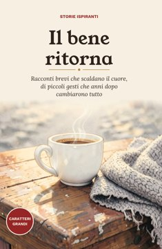
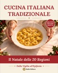
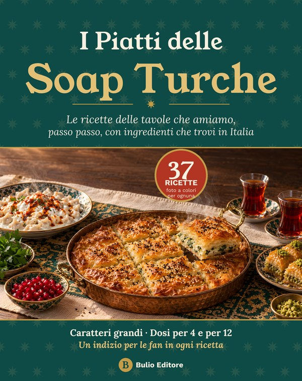

I più venduti di Amazon, scelti per te: migliaia di prodotti, consegna e resi con Amazon. Scopri tutto su unemporio.com
Mentre cammini, cucini o prima di dormire.
AudiolibriProva AudibleMigliaia di audiolibri in italiano. Anche storie vere e biografie. Sulla pagina trovi l'offerta del momento per chi si iscrive la prima volta. Si disdice quando vuoi.Vado su Audible › Il nostro negozio Libri, casa, cucina, tech e i libri scritti da noi, divisi per categorie. Entra nel negozioI link portano ad Amazon.it: il prezzo per te non cambia. Come affiliati riceviamo un guadagno dagli acquisti idonei.
Li trovi su Amazon, stampati o su Kindle.

Fatto da noiIl bene ritorna30 racconti brevi di piccoli gesti buoni che, anni dopo, tornano indietro. Caratteri grandi, un disegno per ogni storia.Lo guardo su Amazon ›
Fatto da noiIl Natale delle 20 Regioni31 ricette dalla Vigilia all'Epifania, le ricette delle nonne di tutte le regioni, con una foto per ogni piatto.Lo guardo su Amazon ›
Fatto da noiI Piatti delle Soap TurcheLe ricette che vedete ogni giorno sulla tavola delle vostre soap turche preferite: 37 piatti, una foto a colori per ognuno.Lo guardo su Amazon ›Divisi per persona: la mamma, la nonna, il papà, l'amica che legge, i nipoti, chi ama cucinare.
Idee regaloRegali di Natale già sceltiNove idee per ogni persona, con i nostri libri di Natale.Apro la pagina ›Persone vere che sono cadute e si sono rialzate.
Niente può fermartiDavid GogginsDa ragazzo picchiato e senza speranze a Navy SEAL: la sua vita raccontata da lui.Guarda su Amazon ›Il segreto di mio figlioAntonia SalzanoLa madre di Carlo Acutis racconta il figlio, dalla vita di tutti i giorni alla santità.Guarda su Amazon ›Francesco. Il primo italianoAldo CazzulloLa vita di San Francesco raccontata come una storia, non come una lezione.Guarda su Amazon ›Per chi, dopo una storia, ha voglia di cambiare qualcosa.
Il coraggio di non piacereKishimi e KogaUn dialogo fra un ragazzo e un filosofo su come smettere di vivere per gli altri.Guarda su Amazon ›Atomic HabitsJames ClearPiccole abitudini di ogni giorno che, sommate, cambiano una vita.Guarda su Amazon ›Un quaderno sul comodino e una frase al giorno.
Calendario Geniale 2027365 frasi, una al giornoUna frase da leggere ogni mattina, per tutto il 2027.Guarda su Amazon ›Quaderno A5 a righeAmazon BasicsCopertina rigida ed elastico: va bene come diario o per le cose da ricordare.Guarda su Amazon ›Agenda giornaliera 202715x21 cm, una pagina al giornoUna pagina intera per ogni giorno dell'anno nuovo.Guarda su Amazon ›Diari della gratitudineNon sono nelle classifiche: ti portiamo alla ricerca di Amazon e scegli tu.Cerco su Amazon ›Una luce piccola che non sveglia chi dorme accanto.
Luce da lettura a clip, 9 LEDGritinSi aggancia al libro e si ricarica col cavo USB. Tre colori di luce.Guarda su Amazon ›Luce da lettura a clip, 19 LEDGritinCome la sorella piccola, ma con più LED e una barra più larga.Guarda su Amazon ›Lampada con pinza da comodinoiZELL, 23 LEDSi pinza alla testiera del letto o alla mensola e si ricarica col cavo USB.Guarda su Amazon ›Spiegazioni semplici per scegliere con calma.
Idee regalo di Natale per la nonnaCalendario di famiglia, album per le foto, puzzle, carte e altre idee che si usano davvero.Luci per leggere la seraLampade a pinza, da scrivania e piccole luci da letto per leggere con comodità.Audiolibri: come si cominciaCome ascoltare un audiolibro, e le cuffie o la cassa per farlo bene.Tutte le guideLeggi anche come scegliamo i prodotti.